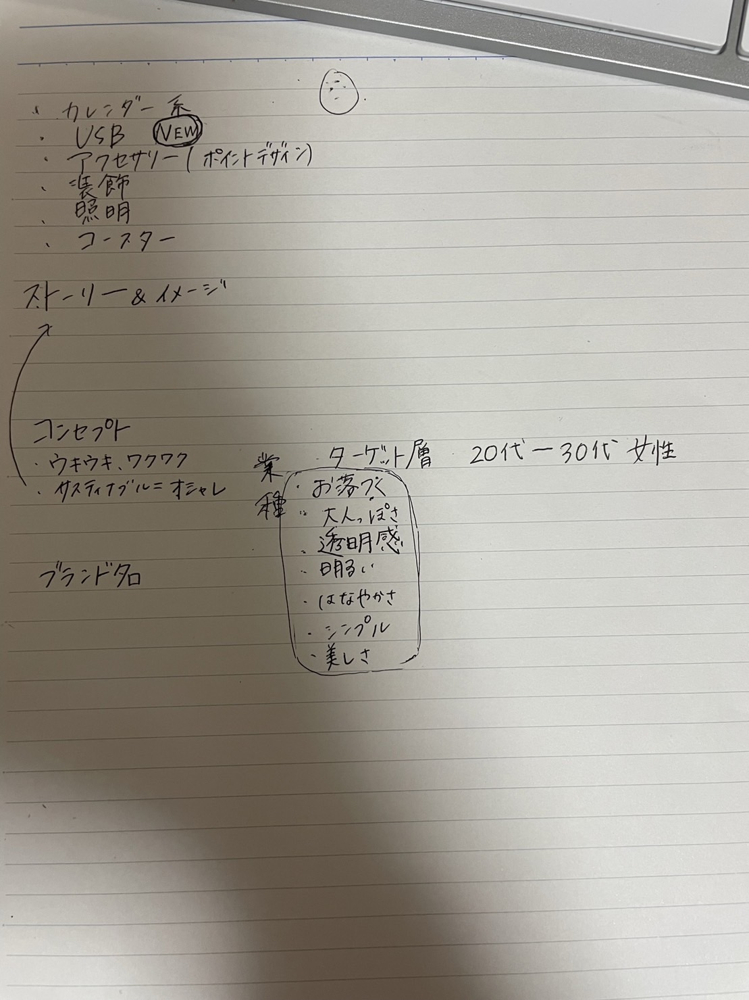

第3回
内容
＊頑張りたい内容＊
2 "鎌倉市在住
鎌倉市在勤" 70代
３DプリンタやIoTなどの「ファブ」に興味があったから
1.肩からショルダーバッグが落ちないような付属品
2.雨を感知したら、洗濯物を素早くまとめて、カバーをかける機器
片岡：わりとなんでも
佐相：情報収集
東原：レーザーカッター、UVプリント
へウォン：
小杉：レーザーカッター、デザイン関係
グループで行うプロジェクト
計画
★イメージ：透き通るような自分らしい魅力的な毎日を提案していきます。
★ストーリー:未定
★コンセプト：未定
★ブランド名：AQUparent(アクペアレント)
イメージしたいこと、方向性
･透き通るような
･水
･クリア
･カラフル
･堅い
･透明感
･個性
･デザイン性
･コーディネート
･楽しむ、自信、満足感
･ウキウキ
･かっこいい
･かわいい
･組み合わせ
🔥強みにしたいこと🔥
◉廃棄されるモノを使用して無駄を活用する大切さを顧客に伝える
1．パーツ方式で組み合わせを選べるようにする
2．カラー展開を豊富にして好みのものを見つけてもらう
3．新しい形、オリジナリティ
4．お手頃な価格（1000円代重視）理由：廃棄されるアクリル板使用のため

、